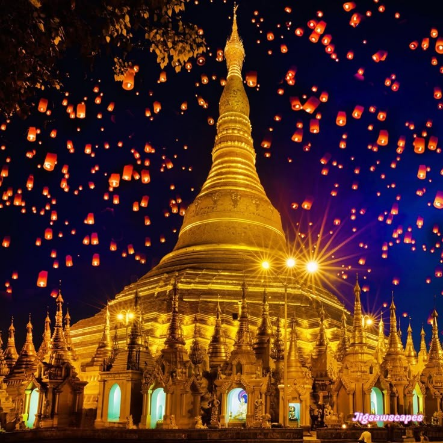
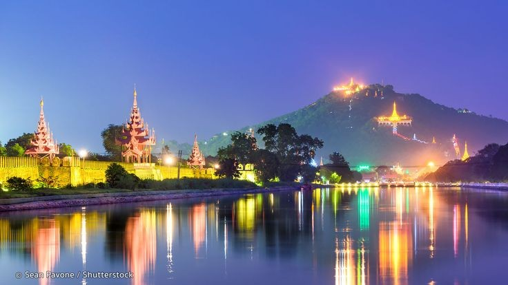
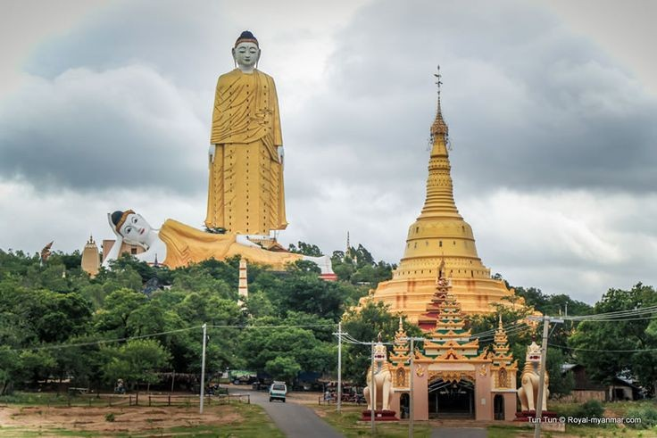

Top Destinations

Yangon
Yangon, the former capital and largest city of Myanmar, is a bustling metropolis known for its colonial architecture, spiritual landmarks like the Shwedagon Pagoda,and its role as a commercial and cultural hub of the country.

Mandalay
Mandalay, once an ancient royal capital of Myanmar, remains today a vibrant center of the nation's enconomy and tourism.

Hkakabo Razi
Hkakabo Razi is the hightest mountain in Myanmar, standing at 5,881 meters (19,295 feet) above sea level.Towering above the clouds,Hkakabo Razi is a breathtaking snow-capped peak surrounded by dense forests and rare wildlife. It is considered the "roof of Myanmar" and a dream destination for adventurous trekkers and mountaineers.

MonywaMonywa is a vibrant city located in Sagaing Region, Central Myanmar, situated on the eastern bank of the Chindwin River.Known for its rich Buddhist heritage, Monywa is home to massive religious landmarks, unique caves, and cultural attractions that make it a hidden gem for travelers.